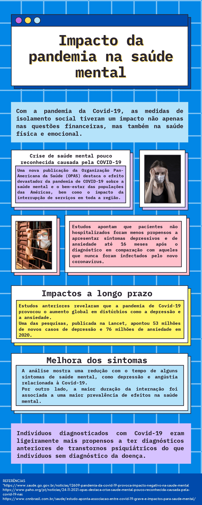

SILENCIOSA E MORTAL
Impacto da pandemia do covid-19 na saúde mental
Muitos estudos científicos nacionais e internacionais evidenciam os impactos da COVID-19 na Saúde Mental das pessoas. Desta maneira, é imprescindível considerar as especificidades daqueles que, em condições ditas “normais”, já necessitam de atenção especial, como as pessoas com deficiência (PCD).
Quer ficar por dentro das novidades?
Perante uma pandemia global, a nossa humanidade comum também ressoou em histórias de coragem e esperança que muitas redações relataram. Numa reportagem especial em fevereiro, intitulada